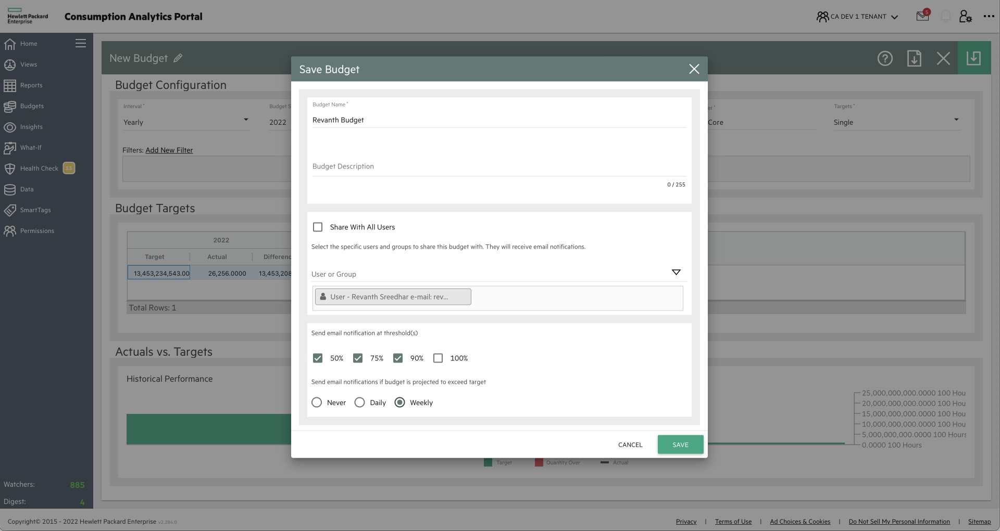
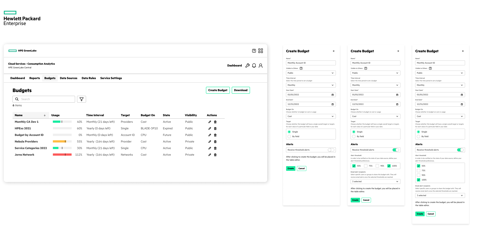
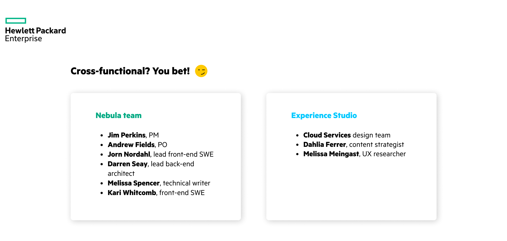

Consumption Analytics
HPE Experience Studio
HPE GreenLake update
Consumption Analytics features
Platform navigation
Search & filter, alerts
HPE is in the process of integrating its products and services into a centralized platform.
During my internship, I worked on two main projects: Consumption Analytics within Cloud Services, and platform navigation (still under NDA).
Consumption Analytics is a dashboard product that allows users to view and manage usage & costs.
I was able to take ownership of the Budgets feature and explore how we might improve its design to account for more intuitive user & task flows.
Our goals and understanding of the scope evolved over the course of the internship, but they always centred around:
We needed to minimize struggles existing users might have when transitioning to the new platform. Above all, we had to ensure that current functionality wasn’t significantly affected.
The dashboard was a legacy product, and many of its features weren’t the most intuitive to find or use. Setting up a budget, for example, included two separate dialogs.
The HPE design system provided guidance, but many of our user flows included edge cases that we had to work around (mostly involving wizards and select components).
The existing user flow did not adequately serve user needs, so it was necessary to create one that factored them in.
This was one of the most challenging problems I encountered, since I wasn’t very familiar with the domain knowledge and many of the ideas I had weren’t easy to implement.

We had to work with limited time and engineering resources, so a balance was needed between:
aligning with the platform’s visual overhaul,
maintaining existing users so they weren’t left behind, and
adding new features to stay competitive and attuned to user needs.
We also had to keep in mind that other HPE products shared similar functionality: it was important to design something that didn’t try to reinvent the wheel, but was tailored to our service’s specific use cases.
I began by looking at the create flow in Budgets. At the time, there was a side panel design which mirrored a pattern from another service, maintaining the old two-dialog flow.
Since alerts weren’t included, I iterated on the modals and soon found that they weren’t suited for scaling; there was no obvious or consistent pattern throughout, which made it incredibly inefficient for frequent users.
After showing the modal series iterations to stakeholders, I proposed a wizard approach for budget creation, while maintaining panel dialogs for editing.
This would consolidate all information and user prompts into one standardized, recognizable process—the only problem being that tables might not fit as easily.
I communicated a lot with developers during iteration to try and understand how feasible some of these ideas were.
I knew wizards were fairly standard and implemented across many other HPE products, but when it came to specific details—such as toggles and drop-downs—I met much more resistance.
Our PM and stakeholders ultimately agreed upon an MVP which would prioritize the visual overhaul by just including existing features, but left space for much-needed updates in the phase following platform integration.
Since we ended up prioritizing compatibility, actions remained the same. This made it fairly simple to design a dialog in the new dashboard, but with some minor tweaks to make it more discoverable.
The next-phase updates include some of my initial proposals to improve usability, such as being able to specify threshold % rather than being limited to only four options, and editing budget access based on individuals.
Given the unique nature of Budgets, there was a lot of back-and-forth with the design system team. However, we came to a consensus on certain components—such as using tables within wizards—which allowed for much faster implementation.
This was my first experience in enterprise design, and I had no idea what to expect. It was also my first time working in such tightly controlled sprints.
HPE has a very technical, developer-focused environment, so I was worried that my lack of domain knowledge would hold me back (at one point I seriously considered taking a course in Kubernetes).
The team working on my feature had been strongly against wizards before, but they ended up liking my proof-of-concept enough for implementation!